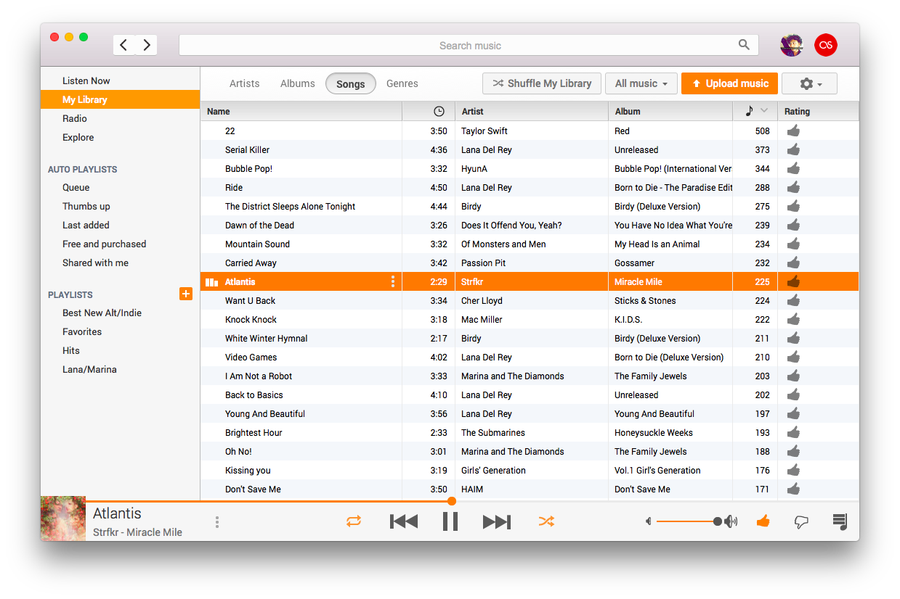
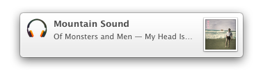
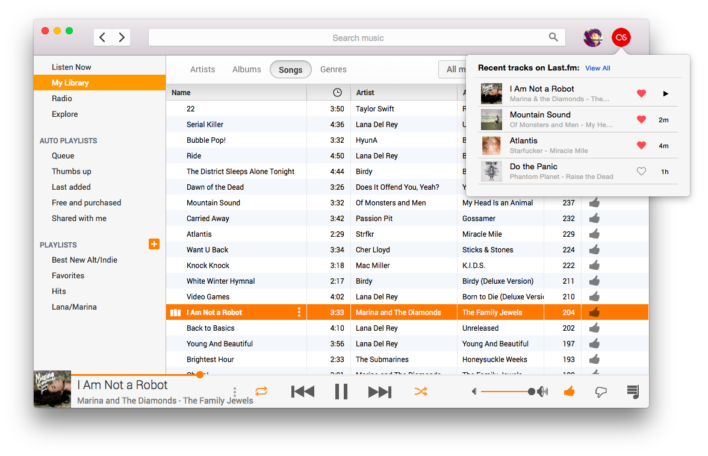

Radiant Player
for Google Play Music™
{kind=link}
Turn Google Play Music into a separate, beautiful application that integrates with your Mac.
Many thanks to @tonybaroneee for style updates, as well as to all the contributors that reported this problem.
- Fix bug due to Google Play Music site change that caused Radiant Player to not work correctly (see #196)
Release notes for Radiant Player v1.2.0:
Lots of new features! In this release, the project has also finally completed the transition from google-music-mac to the name radiant-player-mac.
New features:
- Separate cookie storage from Safari by default (for OS X 10.9 and above only)
- Support 5-star rating system (in Google Play Music labs) with style fixes, 5-star rating controls in the menu and in the mini player
- Show playing status in mini player's icon
- Optionally use Growl notifications instead of Notification Center if Growl is available
- Pause music when system sleeps
Fixes:
- Prevent usage of discrete GPU (fixes #142)
- Fix bugs related to application of navigation features and account information (fixes #151, #157, #158)
- Fix bugs related to erratic movement of Radiant Player window when dragging (fixes #168)
- Prevent full screen when in no-dock-icon mode (fixes #152, #153)
- Fix title bar text colors of certain styles (fixes #135)
Many thanks to @tonybaroneee, @joshgordon, @se-bastiaan, @codingismy11to7, @apfelbox, and all of the contributors and users!
Control your music without having to switch applications. Radiant Player responds to the media keys built into your Mac, allowing you to easily control the playback of your music no matter what you're doing.

Get notifications whenever the currently playing song changes.

Use the mini player in the system menu bar to control your music without interrupting you.
Alternate between mini player sizes by clicking on the album art.
Update your Now Playing status and scrobble tracks to Last.fm.
{kind=link}
Use custom styles built into Radiant Player to make it look beautiful and integrated into your system, or stick with Google's original theme.
{kind=link}
{kind=link}
{kind=link}
{kind=link}
{kind=link}